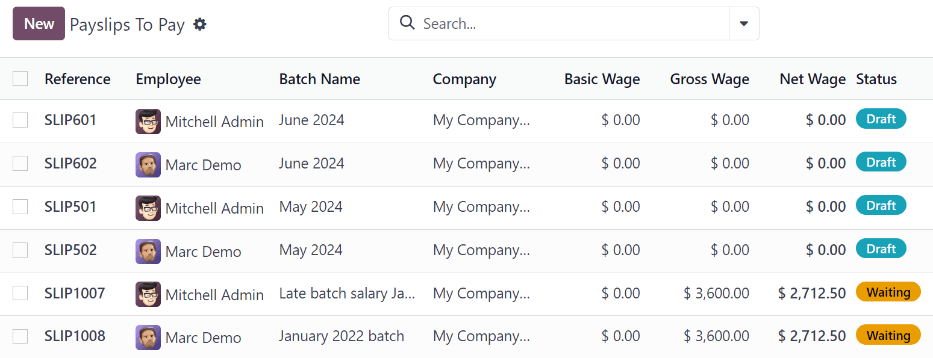
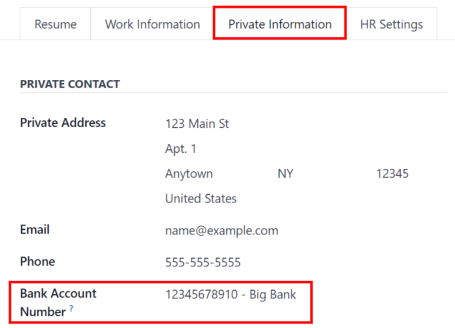
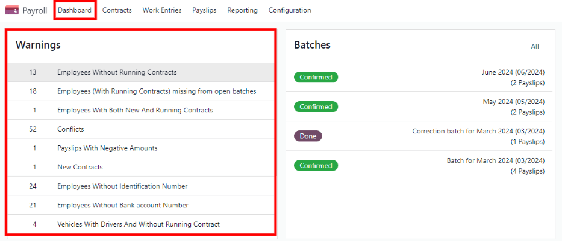
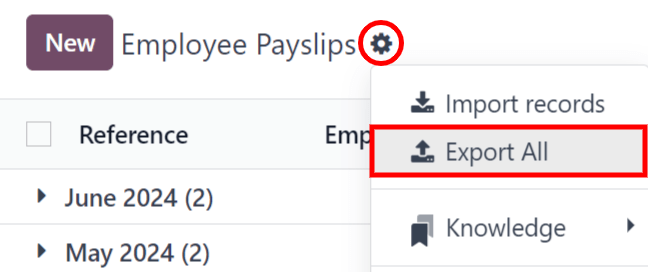
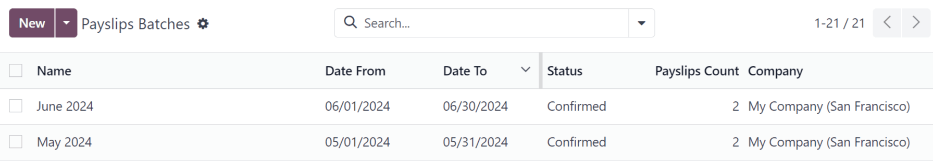
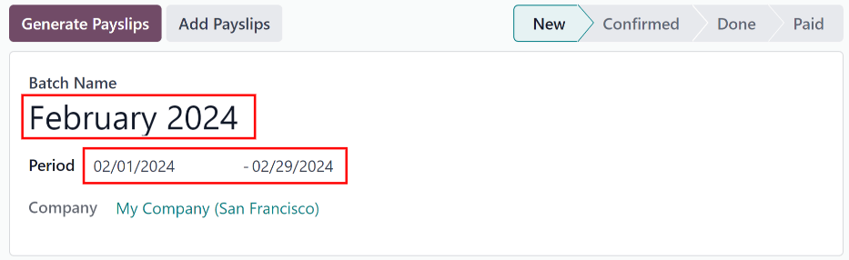
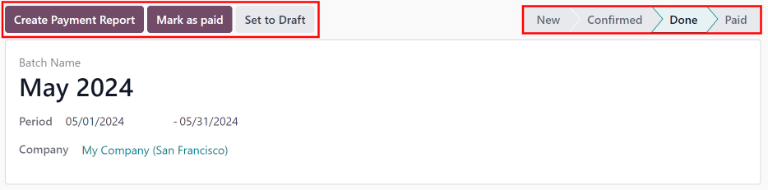
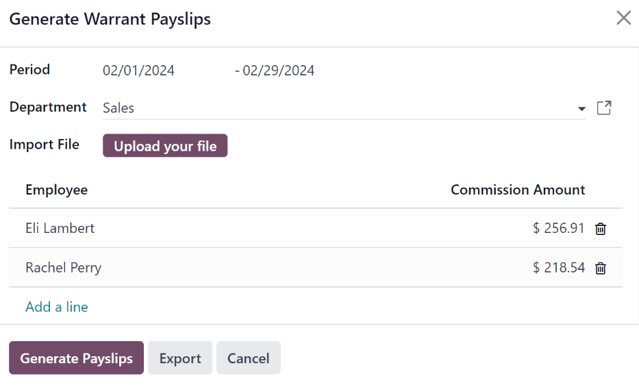

Payslips
Payslips are created either by the employees themselves or their managers, and are approved by authorized employees (typically managers). Then, once payslips are approved, employees are issued payslips and are paid either by check or direct deposit, depending on how their employee profile is configured.
The Payslips drop-down header of the application consists of three sections: To Pay, All Payslips, and Batches.
These three sections provide all the tools needed to create payslips for employees, including individual payslips, a batch of payslips, or commission payslips.

To pay
Click on to see the payslips that need to be paid. On this page, Odoo displays the payslips that have not been generated yet, and can be created from this dashboard.
Each payslip lists the Reference number for the individual payslip, the Employee name, the Batch Name, the Company, the Basic Wage, Gross Wage, Net Wage, and the Status of the payslip.
Click on an individual payslip entry to view the details for that individual payslip.
Create a new payslip
A new payslip can be created from either the Payslips To Pay page or the Employee Payslips page.
Create a new payslip by clicking the New button in the top-left corner.
A blank payslip form is loaded, where the necessary payslip information can be entered.
Payslip form
On the blank payslip form, several fields are required. Most of the required fields auto-populate after an employee is selected.
Fill out the following information on the payslip form:
Employee: type in the name of an employee, or select the desired employee from the drop-down list in this field. This field is required.
Note
It is recommended to only create payslips for employees that are already in the database. If there is no current employee record (and therefore no employee contract) it is recommended to create the new employee in the Employees application before creating payslips for that employee. Refer to the new employee documentation for instructions on how to add an employee.
Period: the first day to the last day of the current month auto-populates the Period fields by default. The dates can be changed, if desired.
To change the start date, click on the first date in the Period field to reveal a pop-up calendar. On this calendar, use the < (less-than) and > (greater-than) icons to select the desired month. Then, click on the desired day to select that specific date.
Repeat this process to modify the end date for the payslip. These fields are required.
Contract: using the drop-down menu, select the desired contract for the employee. Only the available corresponding contracts for the selected employee appear as options. This field is required.
Batch: using the drop-down menu in this field, select the batch of payslips this new payslip should be added to.
Structure: using the drop-down menu, select the salary structure type. Only the corresponding structures associated with the selected contract for the employee appear as options.
If no employee and/or no contract is selected yet, all available Structures appear in the list. Once an employee and/or contract is selected, any unavailable Structures set for that employee and/or contract do not appear. This field is required.
Note
Typically, after making a selection in the Employee field, Odoo auto-populates all other required fields (besides the Period field), but only if that information is already on that employees form in the Employees app.
Important
If modifications to auto-populated fields are made, it is recommended to check with the accounting department to ensure every entry that affects the Accounting application is correct.
Worked days & inputs tab
Worked Days: the entries under Worked Days (including the Type, Description, Number of Days, Number of Hours, and Amount) are automatically filled in, based on what was entered for the Period, Contract, and Structure fields of the payslip form.
Other Inputs: additional inputs affecting the payslip can be entered in this section, such as deductions, reimbursements, and expenses.
Click Add a line to create an entry in the Other Inputs section.
Using the drop-down menu in the Type column, select a Type for the input. Next, enter a Description, if desired. Lastly, enter the amount in the Count field.
Salary computation tab
Salary Computation: the Salary Computation tab is automatically filled in after the Compute Sheet button is clicked. Doing so displays the wages, deductions, taxes, etc. for the entry.
Has Negative Net To Report: click the checkbox if the employee has a negative net amount for this payslip. This only appears if the employees payslip has a negative balance.

Other info tab
Payslip Name: type in a name for the payslip in this field. The name should be short and descriptive, such as
(Employee Name) April 2023. This field is required.Company: select the company the payslip applies to using the drop-down menu in this field. This field is required.
Close Date: enter the date that the payment is made to the employee in this field.
Click in the field to reveal a calendar pop-up window. Using the < > (less-than/greater-than) icons, navigate to the desired month and year.
Then, click on the desired date to select it.
Date Account: enter the date on which the payslip should be posted in this field.
Salary Journal: this field auto-populates after selecting an existing Employee. This field cannot be edited, as it is linked to the Accounting application. This field is required.
Accounting Entry: if applicable, this field is automatically populated once the payslip is confirmed. This field cannot be modified.
Add an Internal Note: any note or reference message for the new entry can be typed in this field.
Process the new payslip
When all the necessary information on the payslip is entered, click the Compute Sheet button. Upon doing so, all the information on the payslip is saved, and the Salary Computation tab auto-populates, based on the information on the employees contract or attendance records.
If any modifications need to be made, first click the Cancel button, then click the Set to Draft button. Make any desired changes, then click the Compute Sheet button once again, and the changes are reflected in the Worked Days and Salary Computation tabs.
Once everything on the payslip form is correct, click the Create Draft Entry button to create the payslip.
Then, a confirmation pop-up window appears, asking Are you sure you want to proceed?. Click OK to confirm.
The chatter is automatically updated to show the email sent to the employee, along with a PDF copy of the payslip.
Note
The database may need to be refreshed for the payslip and email to appear.
To print the payslip, click the Print button. To cancel the payslip, click the Cancel button.

Next, the payment must be sent to the employee. To do this, click the Register Payment button. Doing so reveals a pop-up form, in which the desired Bank Journal that the payment should be made against must be selected from a drop-down menu. Then, click the Confirm button to confirm the journal, and return to the payslip.
Important
In order for a payslip to be paid, the employee must have a bank account entered in their contact information. If there is no bank information, a payslip cannot be paid, and an error appears when the Make Payment button is clicked. Banking information can be found in the Private Information tab on the employees card in the Employees app. Edit the employee card, and add banking information, if it is missing.
Odoo automatically checks bank account information. If there is an error with the employees listed bank account, an error appears in a pop-up window, stating, The employee bank account is untrusted. If this error appears, update the employees bank account information on their Employee Form.
If a payment needs to be canceled or refunded, click the corresponding Cancel or Refund button, located at the top-left of the screen.
Tip
Before processing payslips, it is best practice to check the Warnings section of the Payroll app dashboard. Here, all possible issues concerning payroll appear.
To view the warnings, navigate to . The warnings appear in the top-left corner of the dashboard.
Warnings are grouped by type, such as
Employees Without Running ContractsorEmployees Without Bank account Number. Click on a warning to view all entries associated with that specific issue.If the warnings are not resolved, at any point in the payslip processing process, an error may occur. Errors appear in a pop-up window, and provide details for the error, and how to resolve them.
Payslips cannot be completed if there are any warnings or issues associated with the payslip.
All payslips
To view all payslips, regardless of status, go to . The Employee Payslips page loads, displaying all payslips, organized by batch, in a default nested list view.
Click on the (right arrow) next to an individual batch name to view all the payslips in that particular batch, along with all the payslip details.
The number of payslips in the batch is written in parenthesis after the batch name. The Status for each individual payslip appears on the far-right side, indicating one of the following status options:
Draft: the payslip is created, and there is still time to make edits, since the amounts are not calculated.
Waiting: the payslip has been calculated, and the salary details can be found in the Salary Computation tab.
Done: the payslip is calculated and ready to be paid.
Paid: the employee has been paid.

Click on an individual payslip to view the details for that payslip on a separate page. Using the breadcrumb menu, click Employee Payslips to go back to the list view of all payslips.
A new payslip can be created from the Employee Payslips page, by clicking the New button in the upper-left corner. Doing so reveals a separate blank payslip form page. On that blank payslip form page, enter all the necessary information, as described in the Create new payslips section.
To print PDF versions of payslips from the Payslips to Pay or Employee Payslips pages, first select the desired payslips by clicking on the individual checkbox to the left of each payslip to be printed. Or, click the box to the left of the Reference column title, which selects all visible payslips on the page. Then, click the Print button to print the payslips.
Payslips can also be exported to an Excel spreadsheet. To export all payslips, click on the (gear) icon at the end of the words Employee Payslips in the top-left corner. This reveals a drop-down menu. Click Export All to export all payslips to a spreadsheet.
To export only select payslips, first select the payslips to be exported from the list. Then, click the checkbox to the left of each individual payslip to select it. As payslips are selected, a smart button appears in the top-center of the page, indicating the number of selected payslips. Then, click the (gear) Actions icon in the top-center of the page, and click Export.

Note
Both To Pay and All Payslips display all the detailed information for each payslip.
Batches
To view payslips in batches, navigate to to display all the payslip batches that have been created. These payslip batches are displayed in a list view, by default.
Each batch displays the Name, Date From and Date To dates, its Status, the number of payslips in the batch (Payslips Count), and the Company.
Create a new batch
To create a new batch of payslips from the Payslips Batches page (), click the New button in the top-left corner. Doing so reveals a blank payslip batch form on a separate page.
On the new payslip batch form, enter the Batch Name.
Next, select the date range to which the batch applies. Click into one of the Period fields, and a calendar pop-up window appears. From this calendar pop-up window, navigate to the correct month, and click on the corresponding day for both the start and end dates of the batch.
The current company populates the Company field. If operating in a multi-company environment, it is not possible to modify the Company from the form. The batch must be created while in the database for the desired company.
Process a batch
Click on an individual batch to view the details for that batch on a separate page. On this batch detail page, different options (buttons) appear at the top, depending on the status of the batch:
New status: batches without any payslips added to them have a status of New. The following button options appear for these batches:

Add Payslips: click the Add Payslips button to add payslips to the batch, and an Add Payslips pop-up window appears. Only payslips that can be added to the batch (payslips not currently part of a batch) appear on the list.
Select the desired payslips by clicking the checkbox to the left of each payslip name, then click the Select button to add them to the batch. Once payslips are selected and added to the batch, the status changes to Confirmed.
Generate Payslips: after payslips have been added to the batch, click the Generate Payslips button to process the payslips and create individual payslips in the database.
A Generate Payslips pop-up window appears. If only a specific Salary Structure and/or specific Department is desired to make payslips for, select them from the corresponding drop-down menus. If no selections are made, then all payslips listed in the pop-up window are processed as usual.
Click the Generate button to create the payslips. The Generate Payslips button changes to a Create Draft Entry button, and the status changes to Confirmed.
Confirmed status: batches that have been created and have payslips in them, but the payslips have not been processed, have a status of Confirmed. The following two button options appear for these batches:

Create Draft Entry: click the Create Draft Entry button to confirm the individual payslips (and the batch), and create a draft of the payslips. The batch now has a status of Done.
Set to Draft: if at any point the batch needs to be reverted back to a status of New, click the Set to Draft button. This action does not remove any payslips that have already been added to the batch.
Done status: batches with confirmed payslips in them have a status of Done. The following button options appear for these batches:
Create Payment Report: click the Create Payment Report button, and a Select a bank journal pop-up window appears. Select the correct bank journal from the drop-down menu.
The batch name appears in the File name field, but this can be modified, if desired. Finally, click Confirm to process the payslips, and pay the employees.
Mark as paid: after the payments have been created via the Create Payment Report button, the payslips need to be marked as paid in the database.
Click the Mark as paid button, and the status of the batch changes to Paid.
Set to Draft: if at any point the batch needs to be reverted back to a status of New, click the Set to Draft button. This action does not remove any payslips that have already been added to the batch.
Paid status: batches that have been completed have a status of Paid. No other button options appear for this status.

On the batch detail page, the individual payslips in the batch are accessible, via the Payslips smart button, located above the batch information, in the center. Click the Payslips smart button to view a list of all the individual payslips.
Use the breadcrumb menu to navigate back to the individual batch detail page, or back to the list of all batches.
Generate warrant payslips
Commissions are paid to employees in Odoo using warrant payslips.
Warrant payslips can be generated directly from the Payslips Batches page ().
First, select the desired batches by clicking the box to the left of each batch for which commission payslips should be created. Next, click the Generate Warrant Payslips button at the top of the page.
Doing so reveals a Generate Warrant Payslips pop-up window, in which the necessary information must be filled out.
In this pop-up window, click on the drop-down menus, located beside the Period field, to reveal calendar pop-up windows. On these calendar pop-up windows, select the desired period for which the payslips are being generated. Using the < (left) and > (right) arrow icons, navigate to the correct month, and click on the date to select it.
In the Department field, select the desired department from the drop-down menu.
When a department is selected, the employees listed for that department appear in the Employee section.
Under the Employee section, enter the Commission Amount for each employee in the far-right column. To remove an employee, click the (trash) icon to remove the line.
Add a new entry by clicking Add a Line, and entering the Employee and the appropriate Commission Amount.
Click the Upload your file button to add a file, if necessary. Any file type is accepted.
Once all the commissions are properly entered, click the Generate Payslips button to create the warrant payslips in a batch.
Process the batch in the same way as a typical batch to complete the payment process.